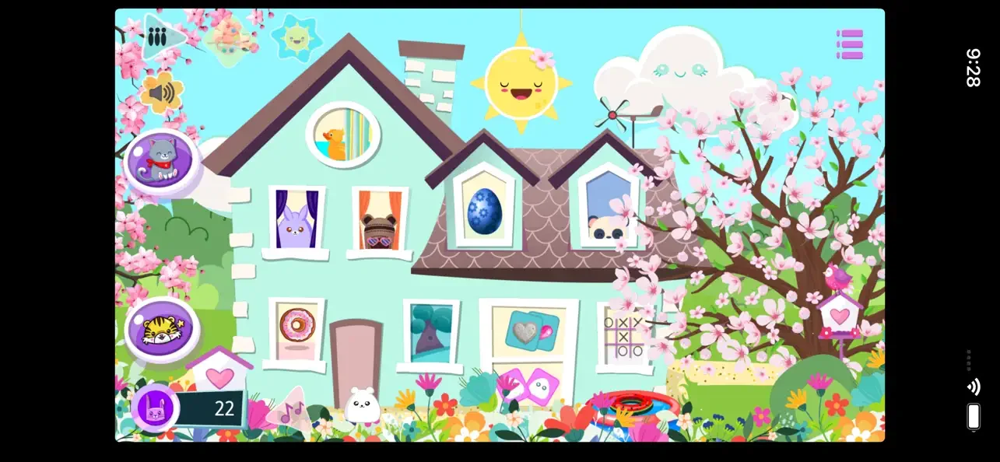
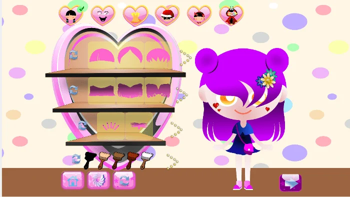
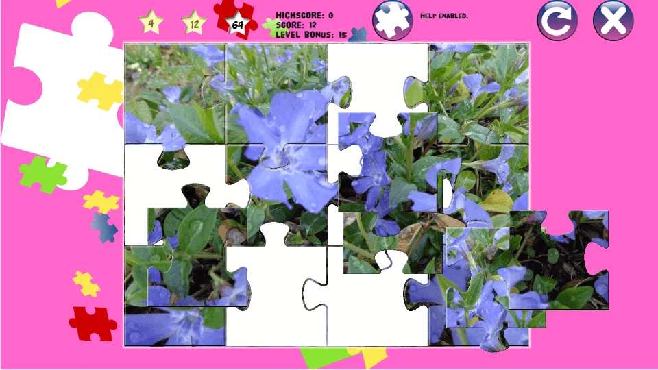
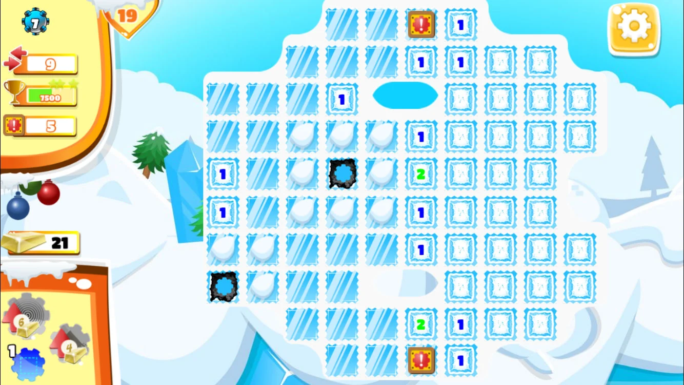
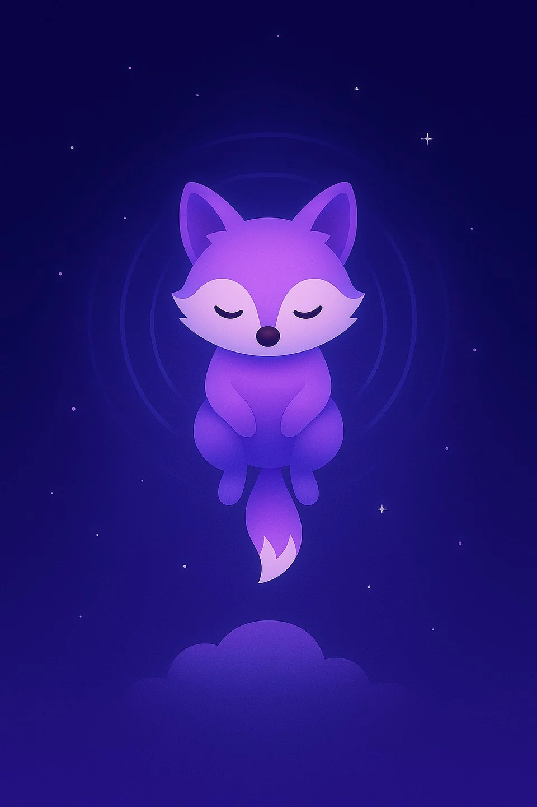

5 point-and-click adventures
TinyStory
Animal heroes, colorful islands and curious mysteries. Find your story among the five TinyStory adventures.
iOS · Android · Desktop, depending on the game
Explore TinyStoryAnneMu’s Games · AML Creation
Discover TinyStory and Celestwald, two point-and-click adventure collections filled with colorful worlds, memorable characters and curious puzzles.
Browse all games ↓5 point-and-click adventures
Animal heroes, colorful islands and curious mysteries. Find your story among the five TinyStory adventures.
iOS · Android · Desktop, depending on the game
Explore TinyStory
2 adventures in an enchanted world
Become an alchemist’s apprentice, discover the Dream Tree and continue your journey with its magical seeds. Explore Celestwald 1 and 2.
iOS · Android · Steam and itch.io for game 1
Explore Celestwald 1 & 2More worlds to discover
Make your Mochi your own, or explore the tile puzzles of Mahjong Castle.

Kawaii & creative games
Create a Mochi virtual pet, dress up baby plushies and decorate their bedrooms. Collect stickers and play mini-games. The daily Golden Cloud activity lets you earn free Bunny Tokens for your little plush world.
iOS · Android
Explore Mochi Plush Kawaii
Puzzles & logic
Match free tiles and explore a magical castle in 240 levels across 14 locations. The free preview includes 30 Garden levels and four Ice levels. Complete Garden level 30 to unlock unlimited Classic layouts. Available on Android, with an optional one-time Adventure Pack purchase.
Android
Explore Mahjong CastleThe collection

Point-and-click adventures
Six kittens, six little adventures. Explore each cat’s world, collect objects and work through playful point-and-click puzzles. Discover different stories and colorful scenes in Cats in the Box Adventure for iOS and Android.
iOS · Android
Explore Cats in the Box Adventure
Point-and-click adventures
Help a tiny pink hero find the shards of a shattered crystal. Explore 30 levels across the Green, Fire and Candy worlds, collect objects and solve puzzles. Watch out for traps along the way. Fantasiant combines adventure and puzzles on mobile and itch.io.
iOS · Android · Windows · macOS · Linux
Explore Fantasiant · Tiny Hero
Kawaii & creative games
Dress up Lili and her teddy bear, then decorate their bedroom with furniture, colors and toys. Make your own creative choices and return to your saved room. Lili’s Bedroom is an offline decorating game for iOS, without ads.
iOS
Explore Lili’s Bedroom
Puzzles & logic
Piece together colorful pictures with 22 jigsaw puzzles and 132 square puzzles. Choose a difficulty that suits your mood and return to your saved progress. Puzzles Mix offers two ways to enjoy picture puzzles on iOS.
iOS
Explore Puzzles Mix
Puzzles & logic
Read the number clues, mark hidden mines and choose each move carefully. Explore 120 levels across two worlds, with special mines and limited moves that add new challenges. Little Minesweeper Guy brings colorful Minesweeper puzzles to iOS.
iOS
Explore Little Minesweeper Guy
Rhythm & relaxation
Tap when the moving circle reaches the glowing arc, build combos and reveal illustrated backgrounds. Choose the gentle Zen Mode or the quicker Fast Mode. Explore 10 worlds, including five free worlds, with an optional one-time Premium purchase. A rhythm game for iPhone and iPad.
iOS
Explore Zen Circle SpiritMochi Plush Kawaii · 2026
Create your Mochi, dress up baby plushies, decorate bedrooms and collect stickers. Play the daily Golden Cloud activity to earn free Bunny Tokens.
Explore Mochi
AML Creation · Sounds & quiet moments
Mix rain, waves, a fireplace and background noise to create your own sound ambience. Adjust each layer, set a timer and listen offline without ads. Somnifox is a sound app for iPhone and iPad, with free features and optional Premium access.
Explore Somnifox ↗